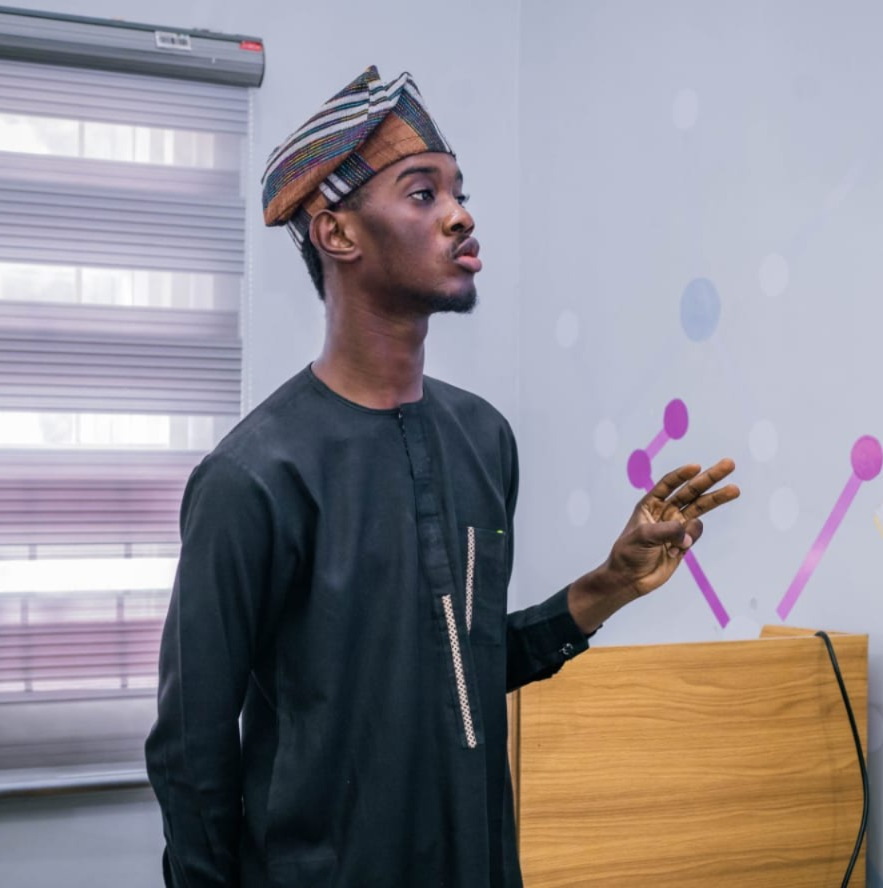

3 years building data pipelines, machine learning models, and deployed AI applications across public health, government policy, and commercial operations in Nigeria and beyond. From field data collection across 14 local government areas to production AI systems used by real teams on real problems.

I am a data analyst and AI developer with 3 years of experience across public health, government, and commercial environments. I work across the full data lifecycle: field data collection, ETL pipeline design, SQL warehousing, statistical analysis, machine learning, and AI application deployment.
At Click-On Kaduna, I built a Bronze-Silver-Gold SQL data warehouse for longitudinal health data across 80 plus PHC facilities in Kaduna State, redesigned the facility readiness Power BI dashboard now used in active government planning, and led field data collection across 14 local government areas using ODK. At Bilsun Textile, I built automated reporting systems that replaced manual spreadsheet workflows and applied demand modelling to reduce overstock.
I have built and deployed four AI and ML applications covering clinical risk prediction, LLM output validation, and domain-specific question answering using RAG architecture. I write clean, documented code and produce work that functions independently without ongoing analyst involvement.
Download Full CVA selection of recent work. Each project is built on real data, documented, and deployed for practical use. Full project history is available on GitHub.
Open to remote data analyst, data science, and AI/ML roles globally. Kaduna, Nigeria at UTC+1 with availability to overlap PST, EST, and CET working hours.